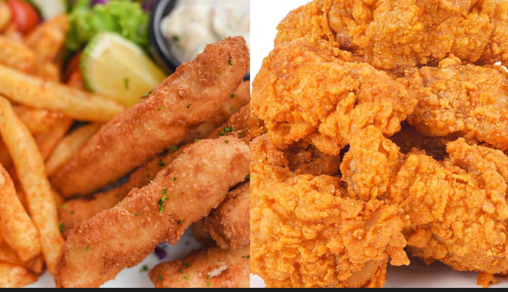
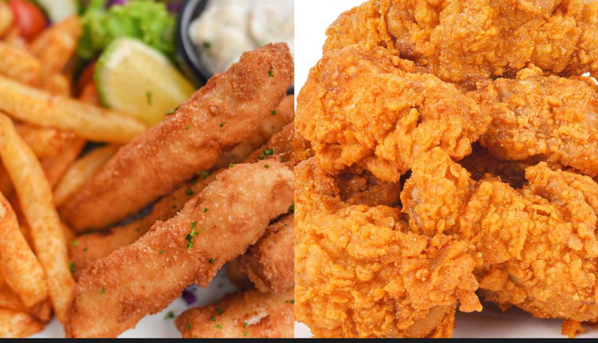
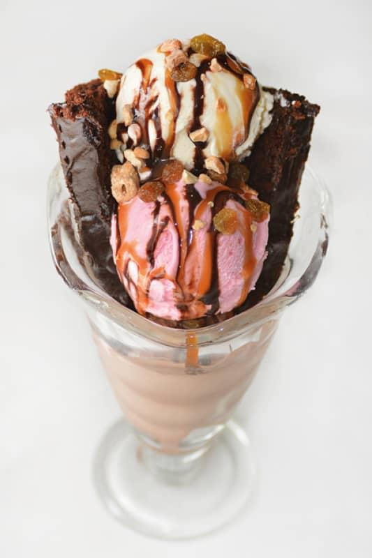

(Two eggs fried with tomato, green pepper and onions served with toasted bread jam or butter and a tomato ring)
(Two Slices of bread served with jam and butter)
(Shredded Pieces of Chicken with lettuce wrapped in a tortilla)
(Four fingers banana cooked in beef and vegetables served with avocado or greens)
Fried Chicken Served with Chapatti and fried eggs
(Two eggs fried with tomatoes, green pepper and onions wrapped in a chapatti served with home fries garnished with a grilled tomato ring)
(Diced Cubes of 5 Assorted Fresh Fruit, Pineapple, Apples, Mangoes, Melon, Pawpaw served in a bowel)
(Chunks of 5 Assorted Fresh Fruit, Pineapple, Apples, Mangoes, Melon, Pawpaw served on a Plater)
(Chicken Breast, Eggs of your choice 2 Beef Sausages, toasted Bread, Baked beans, Grilled Tomatoes, home Fries, Spinach, served with mini juice or coffee.)
(It comes with 2 Eggs of your choice a mini steak 2 Beef Sausages, toasted Bread, Baked Beans, Grilled Tomatoes, home Fries, Spinach, served with mini juice or coffee.)
(3 Mini Pancake 2 Eggs of your Choice Home Fries 2 Sausages, baked Beans.)


BREAKFAST SOUPS
(Cream of tomato with fresh basil and Garlic Crouton)
(It is a transparent soup, prepared without any dairy products and spices except with mushrooms)
(A warm bowl of soup so deliciously creamy with tender bites of mushroom pieces. Full flavored with garlic, onions and herbs)
(It is a transparent soup, prepared without any dairy products and spices except with assorted vegetable)
(It is a tender corn kernels, spices and herbs with assorted vegetable)
(Manchow Soup is a vegetarian soup with mixed vegetables, garlic, ginger, soya sauce, ground pepper.)
(It is a rich flavored clear soup made using chicken, assorted veggies, spices, herbs,)
(Spicy, full of veggies and chicken and fried noodles.)
(Boneless, skinless chicken breast, garlic, rice or wheat noodles, sweetcorn with vegetables)
(A bowl of hot Steamy Soup with Seafood and bold Mediterranean Flavors)
(This delicious cream of spinach soup is as rich, smooth, and creamy as the label "Cream of" would imply.)
(Delicious filled with pasta, beans, tomatoes, and veggies and seasoned with Italian herbs Delicious filled with pasta, beans, tomatoes, and veggies and seasoned with Italian herbs.)

SALADS
(It is composed of leafy vegetables or (Assorted Vegetable), vinegratte dressing)
(This is composed with tuna and a tangy Asian dressing.)
(Chicken Cubes, Boiled eggs, Beef Sausages, Hard Letture, sweet Corns, diced tomatoes, avocado and ranch dressing)
(Chopped and parboiled mixed vegetables (carrot, French beans, potato and green peas) mayonnaise, fresh cream.)
(Mix fruit cocktail, pineapple chunks, mandarin oranges, and marshmallows together in a large bowl.)
(Grilled threaded chicken breast, hard lettuce, assorted vegetables.)
(Fresh tomato and onion salad.)

SALADS APPETIZER
(Frenched chicken drumette, marinated, butter fried or baked until crispy.)
(Deep fry Chicken pieces soak in milk, mix flour.)
(Tossing fried chicken in spicy hot chilli sauce.)
(Spicy marinade chicken wings, herbs.in sriracha sauce.)
(Goat/mutton ribs, chopped into serving pieces, red chilies chopped, (optional) shallots, peeled)
(A delicious and crispy snack with a crunchy and flavorsome coating.)
(An Indo-Chinese appetizer where Crispy fried vegetable balls are dunked in slightly sweet, sour and hot Manchurian sauce.)
(An Indo-Chinese appetizer where crisp batter fried mushrooms are tossed in a sweet and spicy chili sauce.)
(Fish Fillets, Dried Red Chilies soaked, Salt to taste, White pepper powder to taste · Paprika powder.)
(A delicious vegetarian stir fry with cashew nuts, the nuts are sauted with chilli, garlic, cucumber, carrots, spring onions and bell peppers.)
(Great crispy, Oven baked chicken drumsticks marinated with local herbs, plated in a bed of Chinese lettuce.)
(An Indo-Chinese appetizer where crisp batter fried paneer is tossed in slightly sweet, spicy, hot and tangy chilli sauce.)
(Marinated chicken breasts, cut into chunks, Yoghurt, ginger and garlic paste, madras curry powder, ground cumin.)
(Soft, juicy kababs on skewers that will simply melt in your mouth. Tender pieces of boneless chicken,marinated in a unique blend of yogurt, cream, cheese, papaya and spices, cooked on a grill or oven.)
(This is a popular and delicious tandoori snack where Paneer (Indian cottage cheese cubes) are marinated in a spiced yogurt-based marinated, arranged on skewers and grilled in the oven.)
(This is a tender, juicy, moist and outrageously delicious chicken marinated in a tenderizing hebals served with salads.)
(Heathy and delicious appetizers cum snacks made out of spinach, potatoes, peas, Indian spices, and herbs.)
(These are crisp butter coated onion rings.)
(These meat balls always come out amazingly tender, deliciously flavorful, eggs, minced meat deepen in San_Marzano marinara sauce)
(There are wet Vegetable Manchurian, made with generous amount of garlic and ginger and flavored with soy sauce and vinegar.)
(This is a tender, juicy, moist and outrageously delicious chicken marinated in a tenderizing hebals served with salads)


LIGHT BITES
(This is a grilled or steamed sausage served in the slit of a partially sliced bun. In Mastered, tomato sauce on a bed of assorted vegetables)
(Eggs, Chapatti, Salad, Home Fries.)
(Is Buffalo Chicken Wrap is made with tangy buffalo chicken, carrots, lettuce, avocado, and a thin layer of creamy dressing.)
(One chapatti. Chicken breast/ Wing Eggs Onions Green pepper, and a thin little sauce.)
 
MAKE YOUR OWN PASTA BOWL
(Penne, Chilli, Tomato Sauce, Garlic, served with fresh parmesan cheese, basil and parsley.)
(Penne, Garlic, tomato creamy sauce, cheesy, assorted vegetable.)
(Spaghetti pasta, Minced meat, Tomato Sauce, fresh Parmesan Cheese.)
(Spaghetti Pasta in White Creamy Sauce, Eggs, unsalted butter, olive oil)
(Mixture of soy sauce, sesame oil, honey, and black pepper, assorted vegetable, Noodles.)
(Noodles Sunflower or vegetable oil, skinless, boneless chicken thighs, diced, garlic clove, crushed or sliced, red-pepper, thinly sliced.)
(With caramelised beef, a tangle of noodles, and a sweet savoury 4 ingredient sauce,)
(Fresh Prawns, Nests thin vermicelli rice noodles, light soy sauce, oyster sauce, mild curry powder, sesame oil, garlic cloves.)
(Noodles and assorted vegetables.)
(Noodles and assorted vegetables.)

RICE (GRAINS)
(Rice chopped onions, spring onions, garlic, bell pepper, cabbage, chilli, carrot.)
(Assorted vegetables, eggs, Rice, Butter, toasted sesame oil, Oyster sauce)
(Assorted vegetables, Beef, Rice, Butter, toasted sesame oil, Oyster sauce)
(Prawns, Rice, Butter, Toasted Sesame oil, Oyster Sauce, assorted Vegetables)
(Assorted vegetables, Rice, Butter, toasted sesame oil, Oyster sauce, Beatroot)
(Assorted vegetables, eggs, Rice, Butter, toasted sesame oil, Oyster sauce, Chicken, Beef)
(Assorted vegetables, Rice, Mushroom, Butter, toasted sesame oil, Oyster sauce, Beatroot)
(Pilau is a rice dish that's very flavorful and delicious , the spices that are used together with ginger ,garlic and deeply caramelized red)
(Gorma, Marinate and fry the fish, Parboil the rice, assorted vegetables)
(Gorma, Marinate and fry the chicken, Parboil the rice, assorted vegetables)
(Gorma, Marinate and fry the Beef, Parboil the rice, assorted vegetables)
(This is an aromatic rice dish made with rice, veggies & spices.)
(This is simply rice cooked with cumin seeds & ghee or butter.)
PIZZAS
- Pizza margarita Large _________________________________________________________ 30,000 =
- Pizza vegitariana Large ________________________________________________________ 30,000 =
- Beef Pizza Large______________________________________________________________ 37,000 =
- Chicken pizza Large___________________________________________________________ 37,000 =
- Hawaiian pizza Large __________________________________________________________ 37,000 =
- BBQ temptation pizza Large ____________________________________________________ 30,000 =
- AN'S fresh Taste Special Pizza Large ____________________________________________ 39,000 =

SANDWICH
(A delicious mix of mayonnaise, chicken, pepper and assorted veggies spread on the bread,)
(light mayonnaise, horseradish, chili sauce, romaine lettuce leaf and assorted veggies spread on the bread,)
(A delicious mix of mayonnaise, White pepper, chili sauce and assorted veggies spread on the bread,)
(Eggs, whip up a filling mixture, stuff it in bread slices)

BURGERS
(A delicious packed with assorted vegetables mix of mayonnaise, Tomato ketchup and Onion rings, tomato slices spread on the bread,)
(Crispy seasoned chicken breast, topped with mandatory melted cheese, piled onto soft Buns with onion, lettuce, tomato and garlic mayo.)
(Beef Steak Mince, mixed dried herbs, egg, beaten, slices mature Cheddar (optional), white buns, assorted vegetables)
(Hamburger topped with cheese. Traditionally, the slice of cheese is placed on top of the meat patty.)
(Delightful chicken burger topped with McChicken sauce, shredded assorted vegetables and served on a perfectly toasted bun.)

GRILLS
(A family engaging meal concept where all food (local & fast food) is served on a platter)
(Steak in creamy Pepper corn Sauce, beef broth, cream and plenty of crushed peppercorns)
(Juicy tender steak grilled to your preference)
(Tender mushrooms in a rich and creamy garlic sauce come together as a perfect topping for juicy steaks)
(Features halibut fillets marinated in olive oil, lemon juice, basil, and garlic, that are cooked to perfection)
(Goat meat and cut into medium sized pieces. Peel, cut and crush onions, garlic & cot mill mixture thoroughly together)
(Marinade ensure tender, juicy, and flavorful grilled chicken breast, served with steamed vegetables)
(Mouthwatering, juicy oven baked chicken quarters are made with a simple seasoning mix and oven roasted to perfection)
(Juicy stuffed whole chicken with Assorted vegetable and Irish Potatoes)
(Juicy oven roasted goat leg served with home fries)
(Tender beef steak cubes seasoned with herbs served on a bomboo skewers with assorted vegetables and tangy berbeques sauce)
(Tender chicken cubes seasoned with herbs served on a bomboo skewers with assorted vegetables and tangy berbeques sauce)
(Whole tilapia cooked in chefs special way, served with assorted vegetables, boiled matooke, Steamed white rice)
(Spiced whole tilapia stuffed with muchrooms, assorted vegetables, served with boiled irish, matooke, steamed vegetables)
(Well seasoned whole tilapia fried to perfection served with home fried and assorted steamed vegetables)
(Fish tilapia 500g boiled and served with steamed white rice, boiled matooke, irish potatoes)
(Stripes of liver pan fried with assorted vegetables in tomato based sauce served with steamed white rice, home fries)
(Well seasoned goat meat cooked to perfection pan fried assorted vegetables served with home fried, steamed white rice and assorted steamed vegetables)
INDIAN
(Delicious, well seasoned, marinated chicken chunks (chicken tikka) in a spiced creamy sauce. Served with steamed white rice and steamed vegetables)
(Chicken cubes cooked in creamy sauce served with white steamed rice, and home fries)
(The secret to the tender, flavour infused chicken is a spice infused yogurt marinade made with fresh ginger, garlic, lemon juice and spices.)
(A traditional Mughlai dish where bone-in chicken is cooked with spices, onion paste, yoghurt and nuts.)
(A delicious flavourful Lamb curry creamy sauce that comes from Persian origin. It is the signature dish of Kashmir, served with white steamed rice, home fries)
(Hariyali or green curry is a curry loaded with fresh herbs like coriander leaves and some mint leaves. A perfect blend of coriander leaves,)
(Nice delicious palak paneer & mix assorted vegetable)
(A traditional dish in which potatoes (aloo) and cauliflower (gobi) are cooked in an onion-tomato masala (or simply, curry creamy sauce).)
(Assorted vegetable cooked in creamy curry sauce)
(A very rich and creamy with plenty of spices. Made with cashews and coconut milk)
(Slice the block of paneer into, cubes in a small bowl, stir the yogurt, ginger, garlic, cumin, paprika, and salt)
(A classic curried dish from North Indian cuisine made with fresh spinach, onions, spices, paneer and herbs.)
(Marinate fish with ginger garlic paste, turmeric, red chilli powder & salt.)
(Is an Indian dish made by simmering grilled fish in a spicy masaala)
(Delicious pan fried chicken wings basted in our home made chefs BBQ sauce served with home fries and steamed vegetables)
(Well boiled without any oil added only assorted vegetables served with boiled matooke, irish and steamed vegetables)
(Well boiled without any oil added only assorted vegetables served with boiled matooke, irish and steamed vegetables)
(Frenched chicken drumette, marinated, butter fried or baked until crisp served with home fries and steamed vegetables)
(Delicious pan fried Goat ribs basted in our home made chefs BBQ sauce served with home fries and steamed vegetables)
(A little pocket of Indian paradise. Tender fish in a rich, aromatic tomato coconut curry sauce)
(Beef cubes cooked in creamy sauce served with white steamed rice, and home fries)
(Fresh prawns cooked in creamy sauce served with white steamed rice, and home fries)
(Juicy prawns in a sweet, spicy, garlicky sauce, this Chilli Garlic)
ADD-ONS
(Naan is an Indian flat bread. Traditionally they are baked inside a very hot clay tandoor oven)
(One of the popular flat breads, brushed with butter once done, for teat)
(An indian bread, brushed with galic and butter)
(This is super soft and chewy, flavorful homemade flatbread cheesy, garlicky and buttery.)
(An Indian flatbreads stuffed with a delicious spiced potato mixture.)
(An Indian flatbread where the spicy and flavourful minced muttonm ixture is stuffed into a whole wheat flour dough)

DESERTS
(A chefs Choice of the cake)
(A mixture of assorted ice cream)
(A mixture of assorted fresh fruit)
(A delicious berry sized balls made with milk solids, flour soaked in rose flavored sugar syrup)
(It is an authentic Indian dessert made from grated carrots, mlik, sugar, laced with cardamom and garnished with roasted nuts.)
(This is a fudgy Chocolate cake and brownie batter mixed together and baked until rich, fudgy, chocolatey perfection,)
(This is a delicious creamy drink with mango, yogurt, milk, a tltile sugar, and a sprinkling of cardamom. It's cool and refreshing on a hot day!)
(It is a creamy yogurt-based drink from India made with mango, osme milk, a little sugar, and a bit of cardamom. Its’ cool, refreshing and perfect)
